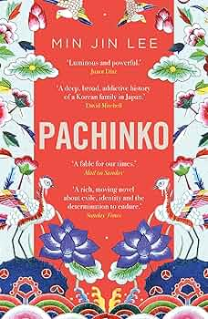
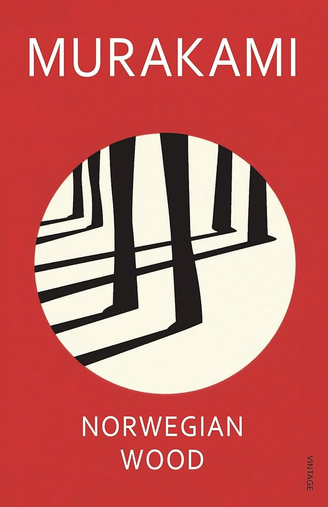
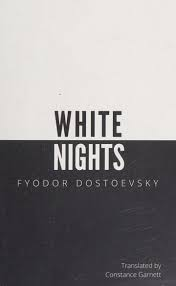

This book is awesome
This is one of my most favourite books i have read , it was gifted to me by my precious girlfriend and has been one of my most cherishing gifts.

My Favourite books
Kafka on the Shore by Haruki Murakami is a surreal, magical realism novel about a runaway teen and an elderly man on intertwined, mysterious journeys

Pachinko by Min Jin Lee is an epic multigenerational novel about a Korean family's struggles and resilience while living in Japan, exploring themes of identity, survival, and belonging.

Norwegian Wood by Haruki Murakami is a poignant coming-of-age novel about love, loss, and emotional turmoil, set against the backdrop of 1960s Tokyo.

White Nights by Fyodor Dostoevsky is a poignant tale of unrequited love and fleeting connection set over four nights in St. Petersburg.